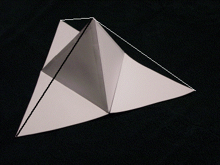

| Dimension |
| Recall that the dimension of a self-similar object is calculated as
log(N) / log(1/r), where at any stage N is the number of
scaled copies contained in that stage and r is the scale of that copy. |
| 1. At any stage, a triangular face is replaced by how many scaled copies of itself? |
| 2. What is the scale factor in going from one stage of the Koch tetrahedron to the next? |
| 3. What is the dimension of the completed Koch Tetrahedron? |
| Answers |
| |
| Observations |
| As we built our model, each stage became larger than the previous stage. In the mathematical
construction of the Koch tetrahedron this is not what happens. |
| To go from one stage to the next we should be removing the central
triangle of each face and replacing it with a three faces of a tetrahedron. |
| We did not do this because as we progress, the triangular faces have smaller and smaller sides
and after only a few stages become too small for physical manipulation. |
| Now imagine we actually made the stage 3 face by removing central triangles and
replacing them by three faces of a tetrahedron. Look at the stage 3 model. |
| 4. Where would the tip of the three faces of the tetrahedron of the stage 1 face be located on the stage 3
face? |
| 5. If we continue to generate more stages of the Koch tetrahedron face by this removal process,
will we ever get any points at any stage which are higher than the tip of the three faces of the
tetrahedron of the stage 1? |
| 6. The stage 3 model does not have a smooth outer surface because it has many
indentations. Think of what happens to these indentations as we go to stages 6, 7, 8, ... .
What will happen to the outer surface as we continue this process forever. What will the
final surface of a face of the Koch tetrahedron be? Explain your reasoning. |
| Answers |
| |
| Now think about a stage 1 face. Think of drawing line segments from the tip of
the three faces of the tetrahedron to each of the vertices of the base. |
|  |
A stage 1 face with line segments drawn from the tip of the three faces of the tetrahedron
to the three vertices of the base |
| 7. What can you say about the length of these segments? |
| 8. What is the angle between two of the segments? |
| 9. What familiar shape is the outside of the Koch Tetrahedron? |
| What is going on here? A cube has dimension two. A cube and its interior has dimension three.
If the outside of the Koch Tetrahedron is a cube, how can the dimension be Log(6) / Log(3)? |
| This is the dimension of the whole object, not just of the outside. |
| Look at the inside of the construction. It is made of
chambers within chambers within chambers. It twists and turns in a convoluted maze of nooks and crannies.
Here is where the fractal lies. You would need more than a trail of bread crumbs or a long thread to find
your way out of this! |
| Answers |